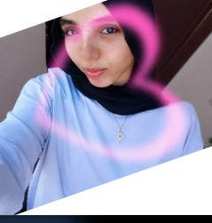

WELCOME TO MY WORLD
RAZAN
MOHAMED
Creative Mind. Ambitious Soul.
أنا رزان محمد، طالبة شغوفة بالمعرفة والتعلم، متعددة المواهب والاهتمامات، أؤمن بأن الإمكانيات الحقيقية لا تُقاس بمجال واحد، وأن الإبداع يبدأ من الفضول والرغبة المستمرة في الاكتشاف والتطوير.
A passionate student, creative thinker, and lifelong learner, exploring different fields and turning knowledge into meaningful experiences.
DISCOVER MY STORY
RAZAN MOHAMED
BEYOND ONE FIELD
More Than One Passion.
أجمع بين التكنولوجيا والإعلام والعلوم والفنون والأدب، وأسعى إلى تحويل ما أتعلمه إلى تجارب ومشروعات ومبادرات واقعية تترك أثرًا إيجابيًا في محيطي.
أهتم بالبحث والتحليل وفهم الإنسان وسلوكه، وأحب الكتابة والتأليف والتعبير عن الأفكار، كما أجد شغفي في البرمجة والتكنولوجيا والذكاء الاصطناعي، إلى جانب الرسم والتصميم والأعمال اليدوية.
MY WORLD OF INTERESTS
Exploring Different Worlds
Technology
Programming · AI · Cybersecurity
Media & Journalism
Journalism · Writing · Communication
Science & Research
Scientific Research · Analysis · Discovery
Arts & Literature
Drawing · Creative Writing · Design
Education
Training · Teaching · Knowledge Sharing
Leadership
Initiatives · Teamwork · Project Management
My Philosophy
لا أرى التعلم مرحلة تنتهي بالحصول على شهادة، بل رحلة مستمرة من التجربة والبحث والتطوير وصناعة الفرص.